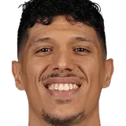

His teams missed the playoffs in all 9 of his seasons; the best final finish was #17 of 30, with the 2021-22 Cleveland Cavaliers. In his 500 games for 3 teams over 9 seasons they went 190–310 (38.0%), −120 games under .500, with an average final finish of 23.8.
Jump to: Record by opponent · Season by season · Teammate help
Compare Lauri Markkanen with…
Suggested, same era and similar teammate help:


Final NBA finish, season by season
Title Finals Other playoffs Missed playoffs. #1 = champion; the dashed line is last place that season. Each point opens that season's final standings.
All 30 teams ranked in 2021-22, his best finish (#17)Teammate help
 Zach LaVine1.01 season
Zach LaVine1.01 season Nikola Vucevic1.01 season
Nikola Vucevic1.01 season Darius Garland1.01 season
Darius Garland1.01 season
Seasons with help 0.1 to 0.2 (3): best finish #23 of 30, 2023-24, worst #26 of 30, 2025-26.
Career
Career records (W–L, W − L, with and without) include 2026-27 games through Nov. 21, 2026; season counts and finishes are through 2025-26. Each card opens its board in the same scope. How we count.

With and without his teammates
His 12 teammates with the most regular-season games together. "Together" is the team's record in the games both played for it; "Without him" is the team's record in the games Lauri Markkanen played for that team while the teammate was on it (between the teammate's first and last game for the team, the appearance span) and the teammate did not play. Fewer than 20 games without him: no gap. Games through Nov. 21, 2026. How we count.

- Together
- 72–128 36.0%
- Without him
- 7–13 35.0%
- Gap
- 1.0 points lower
 Walker Kessler
Walker Kessler Utah 2022-23 to 2025-26
Utah 2022-23 to 2025-26- Together
- 60–91 39.7%
- Without him
- 5–17 22.7%
- Gap
- 17.0 points lower
 Denzel Valentine
Denzel Valentine Chicago 2017-18; Chicago 2019-20 to 2020-21;
Chicago 2017-18; Chicago 2019-20 to 2020-21;  Cleveland 2021-22
Cleveland 2021-22- Together
- 56–93 37.6%
- Without him
- 18–19 48.6%
- Gap
- 11.1 points higher
 Collin SextonCleveland 2021-22; Utah 2022-23 to 2024-25
Collin SextonCleveland 2021-22; Utah 2022-23 to 2024-25- Together
- 55–92 37.4%
- Without him
- 12–17 41.4%
- Gap
- 4.0 points higher
- Zach LaVineChicago 2017-18 to 2020-21
- Together
- 51–93 35.4%
- Without him
- 8–13 38.1%
- Gap
- 2.7 points higher
 Ryan ArcidiaconoChicago 2017-18 to 2020-21
Ryan ArcidiaconoChicago 2017-18 to 2020-21- Together
- 51–92 35.7%
- Without him
- 25–50 33.3%
- Gap
- 2.3 points lower
 Jordan ClarksonUtah 2022-23 to 2024-25
Jordan ClarksonUtah 2022-23 to 2024-25- Together
- 56–77 42.1%
- Without him
- 4–22 15.4%
- Gap
- 26.7 points lower
 Keyonte GeorgeUtah 2023-24 to 2026-27
Keyonte GeorgeUtah 2023-24 to 2026-27- Together
- 42–88 32.3%
- Without him
- 7–15 31.8%
- Gap
- 0.5 points lower
 Robin LopezChicago 2017-18 to 2018-19
Robin LopezChicago 2017-18 to 2018-19- Together
- 35–69 33.7%
- Without him
- 3–9 25.0%
- Gap
- Too few games without him
 Cristiano FelicioChicago 2017-18 to 2020-21
Cristiano FelicioChicago 2017-18 to 2020-21- Together
- 30–72 29.4%
- Without him
- 31–42 42.5%
- Gap
- 13.1 points higher
 Brice SensabaughUtah 2023-24 to 2026-27
Brice SensabaughUtah 2023-24 to 2026-27- Together
- 27–73 27.0%
- Without him
- 22–30 42.3%
- Gap
- 15.3 points higher
 Kelly OlynykUtah 2022-23 to 2023-24
Kelly OlynykUtah 2022-23 to 2023-24- Together
- 47–51 48.0%
- Without him
- 6–4 60.0%
- Gap
- Too few games without him
Latest completed seasons
2026-27 so far
Games through Nov. 21, 2026, the last game in the nightly data. These games are already in his career records above (W–L, win %, W − L, with and without, all marked "incl. 2026-27"). Season counts, final finishes and teammate help use completed seasons through 2025-26; 2026-27 joins them when the season ends.
| Team | His games | With him | Without him | Gap | On/off per 100 | Started / bench | Close games |
|---|---|---|---|---|---|---|---|
| 8 | 1–7 12.5% | 2–7 22.2% | −9.7 | −9.4 | 1–7 / N/A | 1–2 |
Season by season
Newest first; every header sorts. Final NBA finish is the team's rank among all teams that season (#1 = champion) and opens that season's standings. "Without him" uses the team-season window; the span line counts only the games between his first and last game for the team.
| 2025-26 | #26 of 30 | 22–60 26.8% | Missed playoffs | 42 of 82 | 17–25 40.5% | 5–35 12.5%span: 1–15, gap +34.2 | +28.0 | |
| 2024-25 | #30 of 30 | 17–65 20.7% | Missed playoffs | 47 of 82 | 9–38 19.1% | 8–27 22.9%span: 6–16, gap −8.1 | −3.7 | |
| 2023-24 | #23 of 30 | 31–51 37.8% | Missed playoffs | 55 of 82 | 22–33 40.0% | 9–18 33.3%span: 7–11, gap +1.1 | +6.7 | |
| 2022-23 | #22 of 30 | 37–45 45.1% | Missed playoffs | 66 of 82 | 32–34 48.5% | 5–11 31.2%span: 4–8, gap +15.2 | +17.2 | |
| 2021-22 | #17 of 30 | 44–38 53.7% | Lost in play-in | 61 of 82 | 32–29 52.5% | 12–9 57.1%span: 12–9, gap −4.7 | −4.7 | |
| 2020-21 | #21 of 30 | 31–41 43.1% | Missed playoffs | 51 of 72 | 20–31 39.2% | 11–10 52.4%span: 11–10, gap −13.2 | −13.2 | |
| 2019-20 | #24 of 30 | 22–43 33.8% | Missed playoffs | 50 of 65 | 18–32 36.0% | 4–11 26.7%span: 4–11, gap +9.3 | +9.3 | |
| 2018-19 | #27 of 30 | 22–60 26.8% | Missed playoffs | 52 of 82 | 16–36 30.8% | 6–24 20.0%span: N/A, gap N/A | +10.8 | |
| 2017-18 | #24 of 30 | 27–55 32.9% | Missed playoffs | 68 of 82 | 23–45 33.8% | 4–10 28.6%span: 4–10, gap +5.3 | +5.3 |
On/off, starts and close games
From the lineup data, 1996-97 on. On/off is net points per 100 possessions with him on the floor minus off, a different unit from the win-rate gaps. Started and off the bench are team records in those games; close games are those within 5 points in the last 5 minutes with him on the floor.
| 2025-26 | +9.1 | 17–25 40.5% | N/A | 11–6 64.7% | |
| 2024-25 | +6.6 | 9–38 19.1% | N/A | 3–18 14.3% | |
| 2023-24 | +10.1 | 22–33 40.0% | N/A | 9–15 37.5% | |
| 2022-23 | +11.8 | 32–34 48.5% | N/A | 19–25 43.2% | |
| 2021-22 | +4.2 | 32–29 52.5% | N/A | 15–13 53.6% | |
| 2020-21 | −2.3 | 9–17 34.6% | 11–14 44.0% | 7–10 41.2% | |
| 2019-20 | −1.4 | 18–32 36.0% | N/A | 9–14 39.1% | |
| 2018-19 | +3.8 | 16–35 31.4% | 0–1 0.0% | 9–15 37.5% | |
| 2017-18 | −5.9 | 23–45 33.8% | N/A | 15–17 46.9% |
Teammate help by season
Two separate numbers per season, each with every teammate that adds to it. Help this season = Teammates Score points for honors won that season by teammates who shared a game with him. Help coming in = the same teammates' honors from the season before. How help works.
- 2026-27UtahHelp this season: pending (honors are awarded after the season)
Help coming in (2025-26 honors of teammates he has played with so far): 0.125 = 0.125 Ace Bailey
- 2025-26Utah
 Ace Bailey All-Rookie 2nd0.12537 g
Ace Bailey All-Rookie 2nd0.12537 g
Help this season: 0.125 = 0.125 Ace Bailey
More: help coming in and other teammates
Help coming in (teammates' honors the season before): 1.5 = 1.5 Jaren Jackson Jr
Other teammates (no honors that season): Kyle Filipowski 41 g, Brice Sensabaugh 41 g, Keyonte George 35 g, Sviatoslav Mykhailiuk 35 g, Jusuf Nurkic 34 g, Isaiah Collier 34 g, Walter Clayton 31 g, Cody Williams 29 g, Kevin Love 23 g, Taylor Hendricks 22 g, Kyle Anderson 12 g, Elijah Harkless 8 g, Walker Kessler 5 g, Vince Williams Jr 4 g and 3 more
- 2024-25UtahHelp this season: 0, no honored teammate
More: help coming in
Help coming in (teammates' honors the season before): 0.125 = 0.125 Keyonte George
- 2023-24Utah
Keyonte George All-Rookie 2nd0.12551 g
Help this season: 0.125 = 0.125 Keyonte George
More: help coming in and other teammates
Help coming in (teammates' honors the season before): 0.25 = 0.25 Walker Kessler
Other teammates (no honors that season): Collin Sexton 55 g, John Collins 52 g, Kris Dunn 50 g, Jordan Clarkson 47 g, Walker Kessler 46 g, Kelly Olynyk 42 g, Ochai Agbaji 41 g, Simone Fontecchio 40 g, Talen Horton-Tucker 31 g, Omer Yurtseven 27 g, Luka Samanic 25 g, Taylor Hendricks 20 g, Brice Sensabaugh 15 g, Kira Lewis 7 g and 3 more
- 2022-23Utah
Walker Kessler All-Rookie 1st0.2562 g
Help this season: 0.25 = 0.25 Walker Kessler
More: help coming in and other teammates
Help coming in (teammates' honors the season before): 0
Other teammates (no honors that season): Kelly Olynyk 56 g, Jordan Clarkson 55 g, Talen Horton-Tucker 53 g, Rudy Gay 50 g, Malik Beasley 50 g, Jarred Vanderbilt 47 g, Collin Sexton 44 g, Ochai Agbaji 43 g, Mike Conley 40 g, Simone Fontecchio 39 g, Nickeil Alexander-Walker 31 g, Udoka Azubuike 27 g, Leandro Bolmaro 13 g, Kris Dunn 12 g and 7 more
- 2021-22Cleveland
Darius Garland All-Star152 g
 Jarrett Allen All-Star140 g
Jarrett Allen All-Star140 g Evan Mobley All-Rookie 1st0.2550 g
Evan Mobley All-Rookie 1st0.2550 g
Help this season: 2.25 = 1 Darius Garland + 1 Jarrett Allen + 0.25 Evan Mobley
More: help coming in and other teammates
Help coming in (teammates' honors the season before): 0.125 = 0.125 Isaac Okoro
Other teammates (no honors that season): Kevin Love 60 g, Isaac Okoro 49 g, Lamar Stevens 48 g, Cedi Osman 46 g, Dylan Windler 35 g, Dean Wade 30 g, Brandon Goodwin 28 g, Ricky Rubio 25 g, Ed Davis 21 g, Kevin Pangos 18 g, Denzel Valentine 16 g, Caris LeVert 15 g, Moses Brown 14 g, RJ Nembhard 12 g and 8 more
- 2020-21Chicago
Zach LaVine All-Star138 gNikola Vucevic All-Star125 g
 Patrick Williams All-Rookie 2nd0.12550 g
Patrick Williams All-Rookie 2nd0.12550 g
Help this season: 2.125 = 1 Zach LaVine + 1 Nikola Vucevic + 0.125 Patrick Williams
More: help coming in and other teammates
Help coming in (teammates' honors the season before): 0.125 = 0.125 Coby White
Other teammates (no honors that season): Coby White 48 g, Thaddeus Young 47 g, Tomas Satoransky 44 g, Denzel Valentine 41 g, Garrett Temple 35 g, Ryan Arcidiacono 30 g, Daniel Theis 22 g, Otto Porter 19 g, Daniel Gafford 17 g, Wendell Carter Jr 16 g, Javonte Green 15 g, Cristiano Felicio 14 g, Troy Brown 13 g, Adam Mokoka 9 g and 4 more
- 2019-20Chicago
 Coby White All-Rookie 2nd0.12550 g
Coby White All-Rookie 2nd0.12550 g
Help this season: 0.125 = 0.125 Coby White
More: help coming in and other teammates
Help coming in (teammates' honors the season before): 0
Other teammates (no honors that season): Tomas Satoransky 50 g, Thaddeus Young 49 g, Zach LaVine 46 g, Kris Dunn 46 g, Ryan Arcidiacono 43 g, Wendell Carter Jr 41 g, Daniel Gafford 36 g, Shaquille Harrison 31 g, Denzel Valentine 28 g, Luke Kornet 26 g, Chandler Hutchison 19 g, Otto Porter 13 g, Cristiano Felicio 8 g, Adam Mokoka 2 g and 1 more
- 2018-19ChicagoHelp this season: 0, no honored teammate
- 2017-18ChicagoHelp this season: 0, no honored teammate
Record against each opponent
- Best regular-season record against one franchise: 11–9 (55.0%) against the Orlando Magic in 20 games.
- Toughest regular-season record against one franchise: 6–14 (30.0%) against the Brooklyn Nets in 20 games.
Regular season, through 2025-26 (2026-27 games not included): 492 games, 189–303, against 30 franchises.
Grouped by franchise (named as today); game lists keep each team's name that season. Filters and the tab are kept in the URL, so a filtered view can be shared.
| Games list | |||||||
|---|---|---|---|---|---|---|---|
| 21 | 9–12 | 42.9% | −3 | N/A | 2017-18 to 2025-26 | ||
| 21 | 9–12 | 42.9% | −3 | N/A | 2017-18 to 2025-26 | ||
| 20 | 6–14 | 30.0% | −8 | N/A | 2017-18 to 2025-26 | ||
| 20 | 8–12 | 40.0% | −4 | N/A | 2017-18 to 2025-26 | ||
| 20 | 11–9 | 55.0% | +2 | N/A | 2017-18 to 2025-26 | ||
| 20 | 9–11 | 45.0% | −2 | N/A | 2017-18 to 2025-26 | ||
| 19 | 11–8 | 57.9% | +3 | N/A | 2017-18 to 2025-26 | ||
| 19 | 12–7 | 63.2% | +5 | N/A | 2017-18 to 2025-26 | ||
| 19 | 4–15 | 21.1% | −11 | N/A | 2017-18 to 2025-26 | ||
| 19 | 3–16 | 15.8% | −13 | N/A | 2017-18 to 2025-26 | ||
| 18 | 9–9 | 50.0% | 0 | N/A | 2017-18 to 2025-26 | ||
| 18 | 10–8 | 55.6% | +2 | N/A | 2017-18 to 2025-26 | ||
| 18 | 6–12 | 33.3% | −6 | N/A | 2017-18 to 2024-25 | ||
| 18 | 6–12 | 33.3% | −6 | N/A | 2017-18 to 2025-26 | ||
| 17 | 7–10 | 41.2% | −3 | N/A | 2017-18 to 2025-26 | ||
| 16 | 0–16 | 0.0% | −16 | N/A | 2017-18 to 2025-26 | ||
| 16 | 4–12 | 25.0% | −8 | N/A | 2017-18 to 2025-26 | ||
| 16 | 8–8 | 50.0% | 0 | N/A | 2017-18 to 2025-26 | ||
| 16 | 5–11 | 31.2% | −6 | N/A | 2017-18 to 2025-26 | ||
| 16 | 7–9 | 43.8% | −2 | N/A | 2017-18 to 2025-26 | ||
| 15 | 5–10 | 33.3% | −5 | N/A | 2017-18 to 2025-26 | ||
| 15 | 8–7 | 53.3% | +1 | N/A | 2018-19 to 2025-26 | ||
| 15 | 3–12 | 20.0% | −9 | N/A | 2017-18 to 2025-26 | ||
| 15 | 10–5 | 66.7% | +5 | N/A | 2017-18 to 2023-24 | ||
| 14 | 6–8 | 42.9% | −2 | N/A | 2017-18 to 2025-26 | ||
| 14 | 3–11 | 21.4% | −8 | N/A | 2017-18 to 2024-25 | ||
| 11 | 4–7 | 36.4% | −3 | N/A | 2017-18 to 2025-26 | ||
| 10 | 3–7 | 30.0% | −4 | N/A | 2017-18 to 2023-24 | ||
| 8 | 2–6 | 25.0% | −4 | N/A | 2021-22 to 2025-26 | ||
| 8 | 1–7 | 12.5% | −6 | N/A | 2017-18 to 2021-22 |
Rows add up to his career record in his games. A playoff series counts when he played in it; early round-robin games show as games only. How we count.
Arrival and departure
Team wins per 82 games the season before he arrived vs his first season there, and his last season vs the season after he left. He leaves a team only when his next season with games is for another team (or he never plays again); whole seasons he missed and came back from are one "Missed" row with the team's record without him. Per 82 so short seasons compare fairly. These are team records, not a measure of what he did.
| Arrived | 2022-23 | 2021-22: 49–33 49.0 per 82 | 2022-23: 37–45 37.0 per 82 | −12.0 wins | |
| Left | after 2021-22 | 2021-22: 44–38 44.0 per 82 | 2022-23: 51–31 51.0 per 82 without him | +7.0 wins | |
| Arrived | 2021-22 | 2020-21: 22–50 25.1 per 82 | 2021-22: 44–38 44.0 per 82 | +18.9 wins | |
| Left | after 2020-21 | 2020-21: 31–41 35.3 per 82 | 2021-22: 46–36 46.0 per 82 without him | +10.7 wins | |
| Debut | 2017-18 | 2016-17: 41–41 41.0 per 82 | 2017-18: 27–55 27.0 per 82 | −14.0 wins |
Best duos
Team record in regular-season games both played, top 10 by win %, at least 50 games together.
- Evan Mobley
28–22 56.0%
- Darius Garland
29–23 55.8%
 Ochai Agbaji
44–40 52.4%
Ochai Agbaji
44–40 52.4% Rudy Gay
26–24 52.0%
Rudy Gay
26–24 52.0%
Simone Fontecchio 41–38 51.9% Malik Beasley
25–25 50.0%
Malik Beasley
25–25 50.0% Kevin Love
40–43 48.2%
Kevin Love
40–43 48.2%- Kelly Olynyk
47–51 48.0%
- Jordan Clarkson
56–77 42.1%
- Walker Kessler
60–91 39.7%